Bind-Now: the platform that lets BMS launch new digital insurance lines in weeks instead of months. Here's how I approached the design.
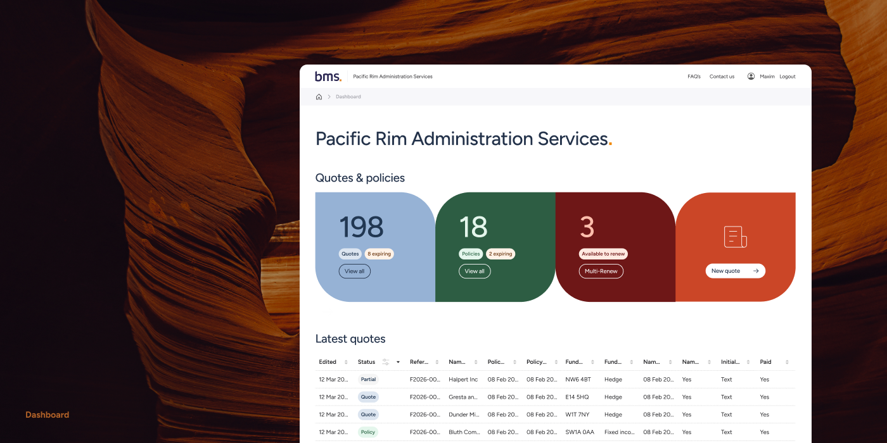
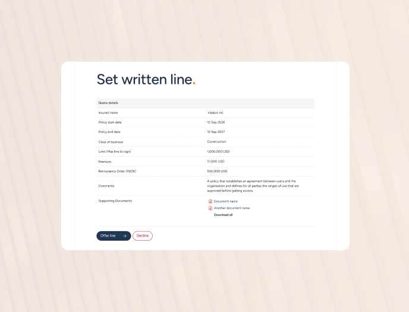
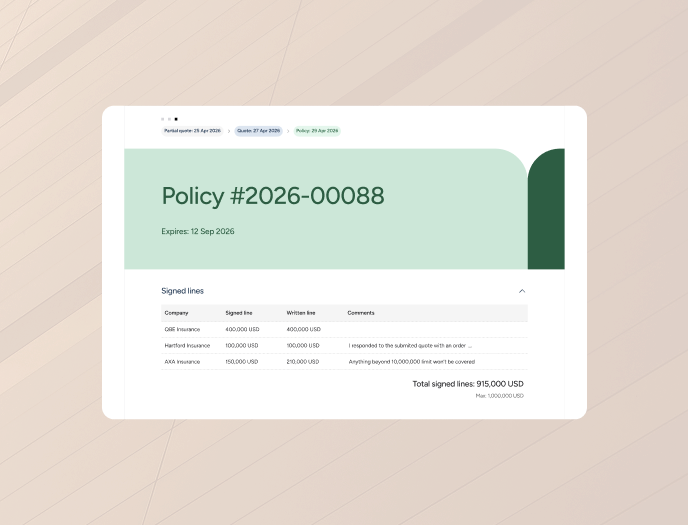
Role: Lead UX/UI Designer
Company: BMS
Team: 1 BA, 3 Devs, 1 Tester
Timeline: 18 months across 6 lines of business (LOB), 5 months MVP through 1st LOB
Status: Live across 6 insurance product lines
When I joined BMS, most insurance lines were still quoted in spreadsheets and email chains. The legacy Quote & Bind tool supported one product and took months of engineering to extend to another.
I led the redesign of Bind-Now, a configurable platform now live across six insurance products. The Fund D&O instance quotes coverage from $1M to $10M in minutes, with policy documents issued automatically on bind.
"BMS' Bind-Now portal has transformed the way we manage Fund Directors' and Officers' Liability coverage, streamlining what was traditionally a manual and time-consuming process into a fully automated solution."
Tom Spraggs Director & Head of Financial Institutions UK Retail, BMS
of business instances now live on Bind-Now.
average brief-to-publish, down from 20 days at baseline.
from kickoff to MVP launch on the first line of business.
A broker at BMS handles dozens of quotes a day, but the legacy system only supported one product line. Everything else lived in Excel, email, and underwriter phone calls, pricing took hours or days.
The structural problem was bigger. Every new digital line meant months of engineering, so most lines never got digitised. The real cost wasn't slow quotes. It was a ceiling on growth.
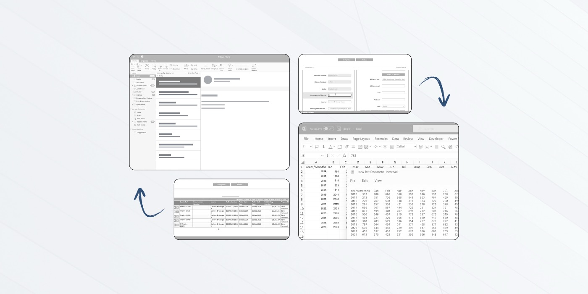
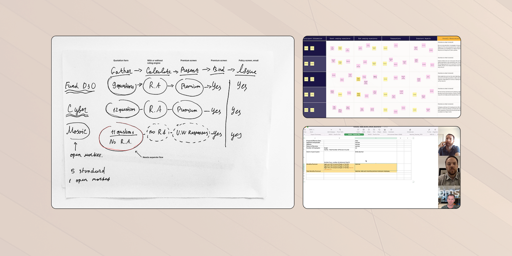
The obvious move was a polished redesign of the single-product tool. The bet I made was a configurable shell any line could be poured into. Harder than designing for one defined product, but if it worked, BMS could spin up new digital lines in weeks, not quarters.
Discovery surfaced one loud pattern. Every line of business had its own questions, pricing, and documents, but the shape of the work was almost identical: gather information, calculate premium or refer, present terms, bind, issue documents.
Two workflow patterns came out of the research: a standard self-serve flow for repeat brokers, and an open-market flow for London Market panels. Every line of business would be configured into one of them.
The self-serve flow, for brokers quoting the same product dozens of times a week.
Insurance UX defaults to wizards: friendly for first-timers, painful for power users. Brokers didn't want to feel guided; they wanted to fly. So I built a single dense screen with smart defaults and progressive disclosure, keeping interrelated questions together so they can complete the form as fast as possible.
Brokers refer back to their own and colleagues' quotes constantly. I tested a card grid, a hybrid layout, and a data table with side-panel filters. The table won. Brokers process saved quotes as data, not objects.
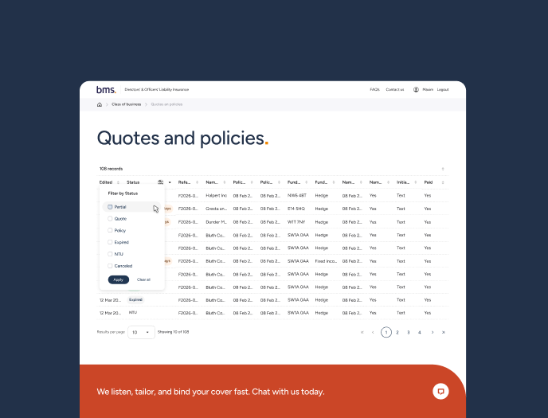
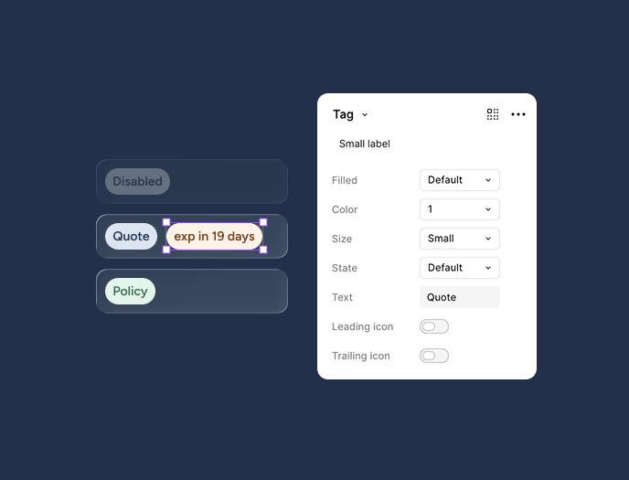
The harder problem. London Market policies have a panel of underwriters, not one. They bid on slices of the same risk, minutes or days apart. The flow had to coordinate them without becoming a chat app.
Each underwriter sees the risk, their capacity, and what others have committed to. They don't see each other in real time. That avoided the chaos of live bidding and the staleness of email chains.
The initial plan was to ship a broker UI while keeping underwriter coordination in email. I argued that would only recreate the legacy process behind a better broker form. Instead, we built two synchronised UIs for brokers and underwriters, updating in real time. That's what shipped.
"The portal has been successfully delivered to several clients, optimising their working practices and systems… having the BMS Tech / IT team's support certainly helps us deliver on client expectations and provides us with a competitive advantage over our peers."
Harry Leonard Divisional Director, North American Direct & Facultative (Cargo), BMS
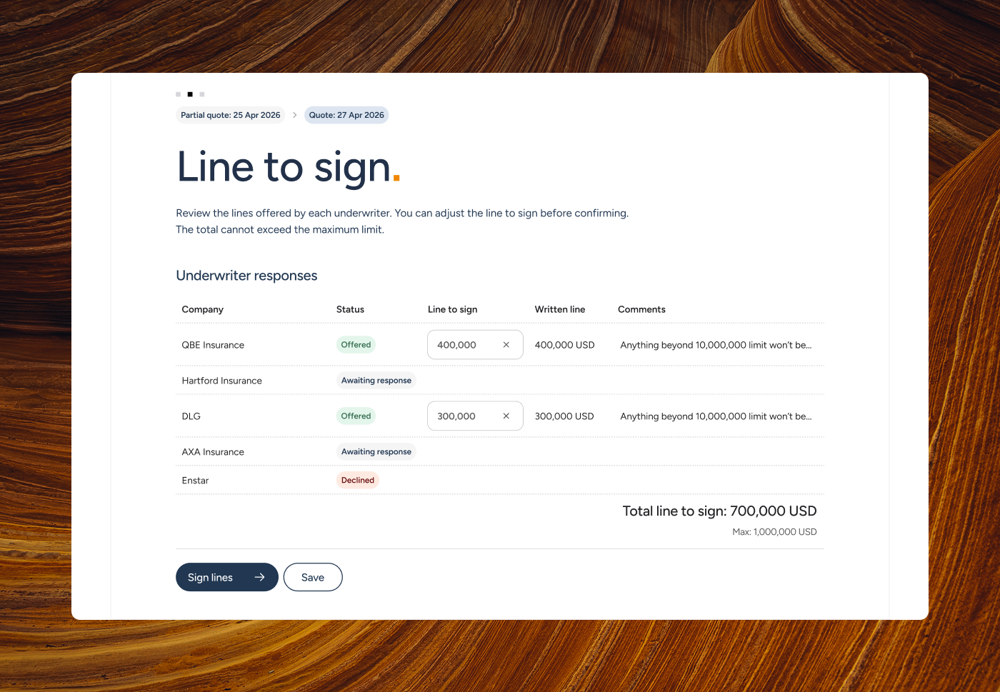
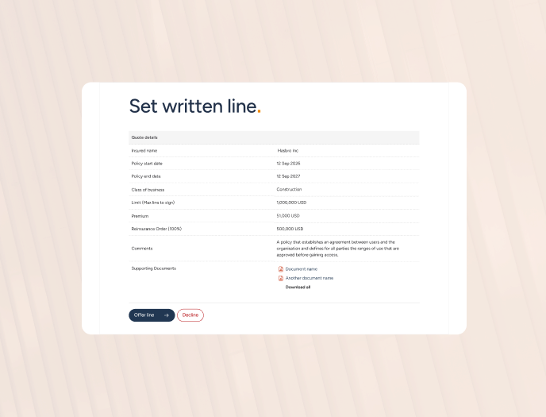
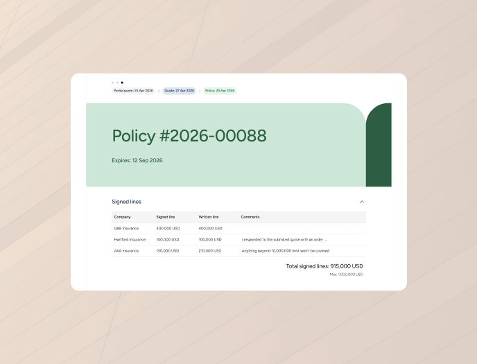
This is the part I'm proudest of. It's what made everything else compound. Every new line needs its own questions, rules, pricing handoffs, and documents. Traditional answer: developers code each line. Bind-Now answer: an admin builds a quotation flow seamlessly, like a web constructor.
For that to produce a consistently good experience, the constructor couldn't be free-form. I established UX principles for quotation journeys that the tool enforces, alongside an extensive design library and design system that I built and maintained alone over 18 months.
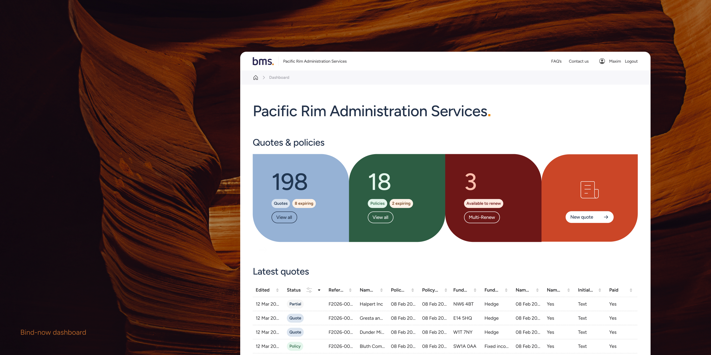
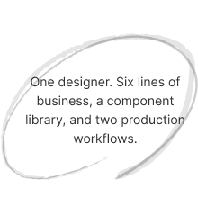
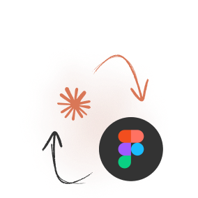
AI isn't great at user research, taste, or big strategic decisions, but it's excellent as a tireless second pair of eyes. My approach is simple: AI helps me test and validate decisions I've already made, not make them for me. It works best when you already know what good looks like.